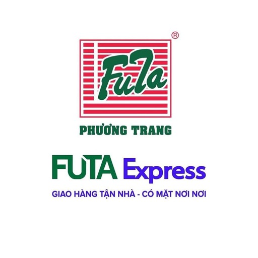

VTRACKING OPERATIONS
Kiện hàng
Từ tiếp nhận đến giao thành công — lịch sử bàn giao rõ ràng.
Chỉ định vị khi bạn cho phép. Tọa độ dùng trong tab này để hiển thị bản đồ, không gửi vào hệ thống logistics.
Thử mã VT-DEMO-001, GHN-DEMO-002 hoặc JT-DEMO-003. Tất cả là dữ liệu minh họa.
Không có tọa độ thì không đặt điểm giả trên bản đồ.
Vị trí xe
Hành trình 24 giờ gần nhất
Sơ đồ tương đối của các điểm GPS; không phải bản đồ nền. Các khoảng mất tín hiệu được ngắt đoạn.Danh mục nhà vận chuyển
Gắn mã vận đơn và phân loại kiện theo hãng. API tra cứu trực tiếp của hãng chưa được cung cấp trong bộ mã nguồn đính kèm.

Câu hỏi thường gặp
Vì sao có đơn hàng nhưng không có vị trí?
Kiện cần được xếp lên một chuyến đang chạy có thiết bị GPS được cấp quyền. Điểm GPS phải phát sinh sau thời điểm xếp hàng. Hệ thống không suy đoán tọa độ từ tên kho.
GPS được cập nhật thế nào?
Bảng theo dõi đồng bộ từ Traccar mỗi 15 giây khi trang đang mở. Thời gian GPS hiển thị là thời điểm thiết bị đo; mất mạng hoặc dữ liệu quá 2 phút sẽ có nhãn vị trí cũ.
Có thể tra cứu mọi mã GHN, J&T hay VNPost ngay không?
Hiện tra cứu các mã đã đăng ký trong Vtracking của tài khoản này. Cần tích hợp backend/API được cấp quyền của từng hãng để nhận sự kiện bên ngoài; frontend đính kèm không chứa backend đó.